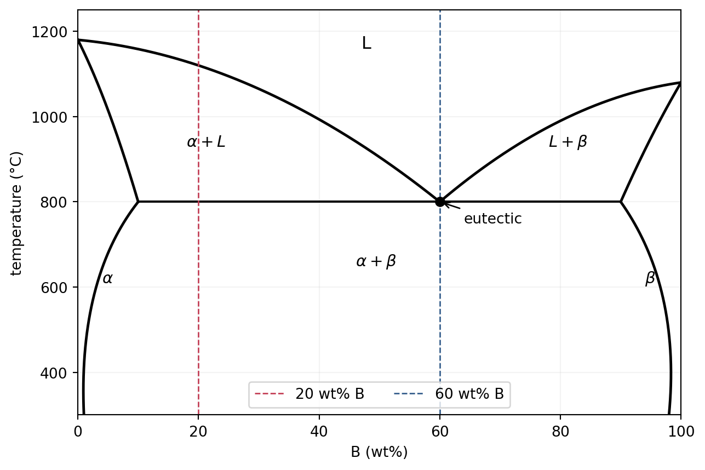
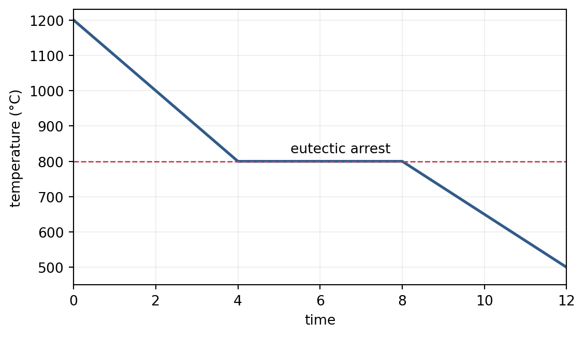

組織生成論
University
phase-transformation
solidification
kinetics
2024
\[ \require{physics} \require{mhchem} \require{ams} \]
この記事では、状態図から凝固組織を読み、核生成、偏析、界面安定性、粒成長、拡散変態、再結晶へ進みます。各問題は、まず問題文だけで考え、必要な理論と解答を順に開ける構成です。
状態図から凝固組織を読む
問題A1 共晶状態図と冷却過程
図の二元共晶系A-B状態図を考える。組成はBの質量百分率で表す。
- A-20 wt% B合金を \(1200\,{}^\circ\mathrm{C}\) から十分ゆっくり冷却する。固相晶出開始温度、液相消失温度、最終組織に占める共晶組織の割合を求めよ。
- A-60 wt% B合金を同様に冷却したときの温度-時間曲線を模式的に描け。
- 両合金の \(1000\,{}^\circ\mathrm{C}\)、\(800\,{}^\circ\mathrm{C}\) 直上、\(800\,{}^\circ\mathrm{C}\) 直下における組織を説明せよ。
Note理論A1：相の割合と組織の割合を区別する
問いの正体は、温度を下げながら合金組成の鉛直線をたどり、相境界を横切るたびに何が生じるかを読むことです。
液相線を横切ると初晶が現れ、共晶温度へ達すると残液が
\[ L\longrightarrow\alpha+\beta \]
へ変わります。共晶温度直上に存在した液相の割合が、そのまま最終組織中の共晶組織の割合です。
二相域での相分率はlever ruleで求めます。全組成を \(C_0\)、tie line両端の組成を \(C_\alpha,C_L\) とすると、液相率は
\[ f_L=\frac{C_0-C_\alpha}{C_L-C_\alpha} \]
です。組織の割合は形成履歴を含む概念なので、同じ最終相分率でも「初晶」と「共晶中の相」を区別します。
純物質や共晶組成では、相変態中に放出される潜熱が冷却による顕熱損失を補うため、温度-時間曲線に停滞が現れます。非共晶組成の初晶晶出は温度範囲をもつため、一般には傾きが変わるだけです。
Tip解答A1
- 20 wt% Bの鉛直線とA側液相線の交点から、晶出開始温度は
\[ \boxed{1120\,{}^\circ\mathrm{C}} \]
である。残液は共晶温度で消失するので、
\[ \boxed{800\,{}^\circ\mathrm{C}} \]
で完全固相となる。共晶温度直上では \(C_\alpha=10\) wt% B、\(C_L=60\) wt% Bなので、残液率は
\[ f_L=\frac{20-10}{60-10}=0.20. \]
したがって、最終組織中の共晶組織は
\[ \boxed{20\%} \]
である。残り80%は初晶 \(\alpha\) である。
- 60 wt% Bは共晶組成なので、液相のまま共晶温度まで冷え、\(800\,{}^\circ\mathrm{C}\) で全液相が共晶変態する。潜熱放出のため温度停滞を示す。
作図コード
import numpy as np
import matplotlib.pyplot as plt
time = np.array([0, 4, 5, 8, 12])
temperature = np.array([1200, 800, 800, 800, 500])
fig, ax = plt.subplots(figsize=(6.4, 3.6))
ax.plot(time, temperature, color="#315b8a", lw=2)
ax.axhline(800, color="#c23b53", ls="--", lw=1)
ax.text(6.5, 825, "eutectic arrest", ha="center")
ax.set(xlabel="time", ylabel="temperature (°C)", xlim=(0, 12), ylim=(450, 1230))
ax.grid(alpha=0.2)
plt.show()
- 組織は次のように整理できる。
| 合金 | \(1000\,{}^\circ\mathrm{C}\) | \(800\,{}^\circ\mathrm{C}\) 直上 | \(800\,{}^\circ\mathrm{C}\) 直下 |
|---|---|---|---|
| 20 wt% B | 初晶 \(\alpha\) と液相 | 成長した初晶 \(\alpha\) と粒間の残液 | 初晶 \(\alpha\) と、残液から生じた層状共晶 \(\alpha+\beta\) |
| 60 wt% B | 液相のみ | 液相のみ | 全体が層状共晶 \(\alpha+\beta\) |
問題A2 fcc表面のbroken bond
最近接結合だけを考えるbroken-bond modelを用いる。
- fcc結晶の \((111)\) 表面にある原子1個あたりのbroken bond数を求めよ。
- \(\gamma_{(111)}=1.0\ \mathrm{J/m^2}\) のとき、\(\gamma_{(110)}\) を推定せよ。
Note理論A2：切断した結合数を単位面積あたりで数える
問いの正体は、表面原子1個の未結合数だけでなく、各面の表面原子密度も比較することです。
fccのバルク原子には最近接原子が12個あります。表面を作ると、面の外側にあった最近接結合が失われます。\((111),(100),(110)\) 面の表面原子1個あたりのbroken bond数はそれぞれ3、4、5です。
同じ結合エネルギーなら、表面エネルギーは単位面積あたりの切断結合数に比例します。
\[ \gamma_{(hkl)}\propto Z_{(hkl)}n_{(hkl)} \]
ここで \(Z\) は原子1個あたりのbroken bond数、\(n\) は表面原子密度です。fccでは
\[ n_{(111)}=\frac{4}{\sqrt3a^2}, \qquad n_{(110)}=\frac{\sqrt2}{a^2} \]
です。
Tip解答A2
- fcc \((111)\) 表面では、表面原子1個あたり面外方向の最近接結合を3本失うので、
\[ \boxed{Z_{(111)}=3} \]
である。
- 比を取ると、
\[ \begin{aligned} \frac{\gamma_{(110)}}{\gamma_{(111)}} &=\frac{Z_{(110)}n_{(110)}}{Z_{(111)}n_{(111)}}\\ &=\frac{5(\sqrt2/a^2)}{3[4/(\sqrt3a^2)]}\\ &=\frac{5\sqrt6}{12}=1.0206. \end{aligned} \]
したがって、
\[ \boxed{\gamma_{(110)}\simeq1.02\ \mathrm{J/m^2}}. \]
相変態の開始
問題B1 過冷却と均一核生成
純金属の融解エンタルピー、融点、モル体積を
\[ \Delta H_{\mathrm{fus}}=10\ \mathrm{kJ/mol}, \quad T_m=1500\ \mathrm{K}, \quad V_m=6.0\times10^{-6}\ \mathrm{m^3/mol} \]
とする。
- 融解エントロピーを求めよ。
- 液体を \(T=1400\ \mathrm{K}\) に過冷却したとき、固体生成の体積自由エネルギー変化 \(\Delta G_v\) を求めよ。
- 固液界面エネルギーが \(\gamma=0.18\ \mathrm{J/m^2}\) のとき、球状固体核の臨界半径を求めよ。
- 多結晶中で粒界核生成が起こりやすい理由を説明せよ。
Note理論B1：体積利得と界面損失が競争する
問いの正体は、固相へ変わることで下がる自由エネルギーと、新しい固液界面を作るために増える自由エネルギーを足すことです。
融点では固相と液相が平衡なので \(\Delta G_{\mathrm{fus}}=0\) です。したがって、
\[ \Delta S_{\mathrm{fus}}=\frac{\Delta H_{\mathrm{fus}}}{T_m}. \]
融点近傍で \(\Delta H,\Delta S\) の温度依存性を無視すると、固体生成のモル自由エネルギー変化は
\[ \Delta G_m^{L\to S}simeq -\Delta H_{\mathrm{fus}}\frac{T_m-T}{T_m} \]
です。体積あたりでは \(\Delta G_v=\Delta G_m/V_m<0\) となります。
半径 \(r\) の球状核を作る自由エネルギー変化は
\[ \Delta G(r)=\frac43\pi r^3\Delta G_v+4\pi r^2\gamma. \]
小さな核では界面項が支配的で消滅し、大きな核では負の体積項が支配的で成長します。極大点が臨界核です。
Tip解答B1
\[ \boxed{ \Delta S_{\mathrm{fus}} =\frac{10000}{1500} =6.67\ \mathrm{J/(mol\,K)} }. \]
- \(\Delta T=T_m-T=100\ \mathrm{K}\) より、
\[ \begin{aligned} \Delta G_v &=-\frac{10000}{6.0\times10^{-6}} \frac{100}{1500}\\ &=\boxed{-1.11\times10^8\ \mathrm{J/m^3}}. \end{aligned} \]
- \(\dv*{\Delta G}{r}=0\) から
\[ r^*=\frac{2\gamma}{\abs{\Delta G_v}}. \]
したがって、
\[ \boxed{ r^*=\frac{2(0.18)}{1.11\times10^8} =3.24\times10^{-9}\ \mathrm{m} }. \]
- 粒界はすでに高い界面自由エネルギーをもち、核生成によって新たに増える界面エネルギーを小さくできる。そのため均一核生成より自由エネルギー障壁が低い。また粒界拡散が速く、核の成長に必要な原子移動も進みやすい。
非平衡凝固と界面安定性
問題C1 Scheil式と平滑界面の条件
A-12 wt% B合金を一方向凝固させる。状態図の直線近似から平衡分配係数は \(k=1/3\)、この組成における液相線と固相線の温度差は \(\Delta T=160\ \mathrm{K}\) とする。液相内では溶質濃度が一様、固相内では拡散がないものとする。
- 固相分率 \(f_s\) に対する液相濃度 \(c_l\) と、界面で新たに生じる固相濃度 \(c_s\) を導け。
- \(f_s=0.50\) で残液を除去したとき、それまでに生成した固相の平均B濃度を求めよ。
- 液相中の拡散係数 \(D=1.0\times10^{-9}\ \mathrm{m^2/s}\)、界面前方の温度勾配 \(G=2.0\times10^6\ \mathrm{K/m}\) とする。組成的過冷却を生じず、平滑界面を保てる凝固速度 \(V\) の範囲を求めよ。
Note理論C1：固まるたびに残液へ溶質が濃縮する
問いの正体は、界面での局所平衡 \(c_s=kc_l\) と、系全体の溶質保存を同時に使うことです。
Scheil modelの仮定は次の三つです。
- 固液界面では局所平衡が成り立ち、\(c_s=kc_l\)。
- 液相は十分混合され、濃度は空間的に一様。
- 一度生成した固相中では溶質が拡散しない。
固相が \(\dd f_s\) だけ増えると、新しい固相へ \(c_s\dd f_s\) の溶質が取り込まれます。液相率 \(f_l=1-f_s\) を使えば、液相の溶質減少との収支は
\[ -c_s\dd f_s=\dd(c_lf_l) \]
です。
平滑界面の前方では、溶質濃化による局所液相線の低下と、実際の温度上昇が競争します。この問題で与えられた直線近似では、平滑界面条件を
\[ \frac{DG}{V\Delta T}>1 \]
と書けます。拡散境界層の尺度 \(D/V\) が長いほど溶質が逃げやすく、温度勾配 \(G\) が大きいほど組成的過冷却を抑えます。拡散境界層の考え方は材料速度論のFick則と共通です。
Tip解答C1
- \(f_l=1-f_s\) と \(c_s=kc_l\) を代入すると、
\[ \begin{aligned} -kc_l\dd f_s &=\dd[c_l(1-f_s)]\\ &=(1-f_s)\dd c_l-c_l\dd f_s. \end{aligned} \]
よって、
\[ \frac{\dd c_l}{c_l}=(1-k)\frac{\dd f_s}{1-f_s}. \]
\(f_s=0\) で \(c_l=c_0\) として積分すると、
\[ \boxed{c_l=c_0(1-f_s)^{k-1}}, \qquad \boxed{c_s=kc_0(1-f_s)^{k-1}}. \]
- 生成固相の平均濃度は
\[ \begin{aligned} \bar c_s &=\frac{1}{f_s}\int_0^{f_s}kc_0(1-f)^{k-1}\dd f\\ &=\frac{c_0}{f_s}\left[1-(1-f_s)^k\right]. \end{aligned} \]
したがって、
\[ \begin{aligned} \bar c_s &=\frac{12}{0.50}\left[1-(1-0.50)^{1/3}\right]\\ &=\boxed{4.95\ \mathrm{wt\%\ B}}. \end{aligned} \]
- 平滑界面条件から
\[ V<\frac{DG}{\Delta T} =\frac{(1.0\times10^{-9})(2.0\times10^6)}{160}. \]
よって、
\[ \boxed{V<1.25\times10^{-5}\ \mathrm{m/s}} \]
である。これを超えると界面前方に組成的過冷却が生じ、セル状・デンドライト状界面が発達しやすい。
組織の粗大化と変態速度
問題D1 粒成長とZener pinning
半径 \(r_p=100\ \mathrm{nm}\) の球状酸化物粒子が、数密度 \(N=3.0\times10^{17}\ \mathrm{m^{-3}}\) で一様に分散している。\(\beta\) 単相温度での平均粒径は、保持開始時に \(d_0=3.0\ \mathrm{\mu m}\)、10 s後に \(d=30\ \mathrm{\mu m}\) であった。
- 粒成長則 \(d^3-d_0^3=Kt\) が成り立つとして、200 s後の平均粒径を求めよ。
- 粒子体積率とZener限界粒径 \(d_Z\simeq4r_p/(3f_v)\) を求め、1.の成長がpinningで停止するか判定せよ。
Note理論D1：曲率が成長を駆動し、粒子が粒界を止める
問いの正体は、測定した短時間の粒成長から速度定数を決め、分散粒子による上限と比較することです。
粒界は面積を減らそうとするため、曲率の大きい小粒は縮小し、大粒は成長します。成長指数は律速機構で変わりますが、この問題では \(d^3-d_0^3=Kt\) が指定されています。
粒界が粒子を通過しようとすると粒界面積が増えるため、粒子はpinning pressureを及ぼします。球状粒子の希薄分散に対する代表的なZener estimateは
\[ d_Z\simeq\frac{4r_p}{3f_v}, \qquad f_v=N\frac43\pi r_p^3 \]
です。係数は粒径の定義や粒子配置モデルで多少変わるため、ここでは問題で採用した式に従います。
Tip解答D1
- 10 sのデータから
\[ K=\frac{30^3-3^3}{10} =2.6973\times10^3\ \mathrm{\mu m^3/s}. \]
よって、
\[ \begin{aligned} d(200) &=\left[d_0^3+K(200)\right]^{1/3}\\ &=\left[3^3+(2.6973\times10^3)(200)\right]^{1/3}\\ &=\boxed{81.4\ \mathrm{\mu m}}. \end{aligned} \]
- 粒子体積率は
\[ \begin{aligned} f_v &=(3.0\times10^{17})\frac43\pi(100\times10^{-9})^3\\ &=1.26\times10^{-3}. \end{aligned} \]
したがって、
\[ d_Z\simeq\frac{4(100\times10^{-9})}{3(1.26\times10^{-3})} =1.06\times10^{-4}\ \mathrm{m} =106\ \mathrm{\mu m}. \]
\[ \boxed{d(200)=81.4\ \mathrm{\mu m}<d_Z=106\ \mathrm{\mu m}} \]
なので、200 s時点ではまだZener限界に達していない。
問題D2 拡散律速の平面界面成長
C-0.22 wt% D合金を \(800\,{}^\circ\mathrm{C}\) で保持すると、\(\beta\) 粒界から \(\alpha\) 相が平滑界面で一次元成長した。界面母相側濃度を \(C_m=0.62\) wt% D、合金平均濃度を \(C_0=0.22\) wt% D、界面新相側濃度を \(C_p=0.02\) wt% D、\(\beta\) 相中の拡散係数を
\[ D=3.0\times10^{-12}\ \mathrm{m^2/s} \]
とする。Zenerの線形勾配近似を用い、40 s後の \(\alpha\) 相厚さと界面速度を求めよ。
Note理論D2：拡散距離が \(\sqrt{t}\) で伸びると界面は減速する
問いの正体は、界面が進むために排出または供給すべき溶質を、母相内の拡散が運べる速さとつり合わせることです。
線形濃度勾配を仮定すると、この問題では界面位置を
\[ \xi=\alpha\sqrt{t} \]
と近似でき、
\[ \alpha= \frac{\sqrt D(C_m-C_0)} {\sqrt{(C_m-C_p)(C_0-C_p)}} \]
です。拡散境界層は時間とともに厚くなるため、界面速度
\[ v=\dv{\xi}{t}=\frac{\alpha}{2\sqrt t} \]
は \(t^{-1/2}\) に比例して低下します。
Tip解答D2
\[ \begin{aligned} \alpha &=\frac{\sqrt{3.0\times10^{-12}}(0.62-0.22)} {\sqrt{(0.62-0.02)(0.22-0.02)}}\\ &=2.00\times10^{-6}\ \mathrm{m/s^{1/2}}. \end{aligned} \]
したがって、40 s後の厚さは
\[ \boxed{ \xi=(2.00\times10^{-6})\sqrt{40} =1.26\times10^{-5}\ \mathrm{m} =12.6\ \mathrm{\mu m} }. \]
界面速度は
\[ \boxed{ v=\frac{2.00\times10^{-6}}{2\sqrt{40}} =1.58\times10^{-7}\ \mathrm{m/s} }. \]
問題D3 二次元再結晶とJMAK式
厚さ \(h=100\ \mathrm{nm}\) の薄箔中に、数密度 \(N=3.0\times10^{17}\ \mathrm{m^{-3}}\) の粒子が一様分散している。すべての粒子が \(t=0\) に再結晶核となり、円形の再結晶粒が一定速度 \(G\) で二次元成長する。10 s後の再結晶率が99%であるとき、\(G\) を求めよ。
Note理論D3：重なりを許して成長面積を数え、指数関数で補正する
問いの正体は、再結晶粒同士の重なりを無視して数えた拡張面積から、実際の変態率を求めることです。
箔の単位面積あたりの核数は \(N_s=Nh\) です。各核が半径 \(R=Gt\) の円へ成長すると、重なりを許して数えた単位面積あたりの拡張面積は
\[ Y=N_s\pi(Gt)^2 \]
です。ランダム配置された核について、未変態点がどの円にも覆われない確率は \(e^{-Y}\) なので、実際の変態率は
\[ X=1-e^{-Y} \]
となります。これはsite-saturated nucleation、二次元成長に対するJMAK式で、Avrami指数は2です。
Tip解答D3
面積核密度は
\[ N_s=Nh =(3.0\times10^{17})(100\times10^{-9}) =3.0\times10^{10}\ \mathrm{m^{-2}}. \]
\(X=0.99\)、\(t=10\ \mathrm{s}\) を代入すると、
\[ 0.99=1-\exp[-N_s\pi(Gt)^2]. \]
したがって、
\[ \begin{aligned} G &=\frac{1}{t}\sqrt{\frac{-\ln(1-X)}{N_s\pi}}\\ &=\frac{1}{10}\sqrt{\frac{-\ln(0.01)}{(3.0\times10^{10})\pi}}\\ &=\boxed{6.99\times10^{-7}\ \mathrm{m/s}}. \end{aligned} \]
公式の使い分け
| 現象 | 支配する競争 | 代表式 |
|---|---|---|
| 均一核生成 | 体積自由エネルギー低下と界面生成 | \(r^*=2\gamma/\abs{\Delta G_v}\) |
| Scheil凝固 | 界面局所平衡と溶質保存 | \(c_s=kc_0(1-f_s)^{k-1}\) |
| 平滑界面の安定 | 溶質拡散と組成的過冷却 | \(DG/(V\Delta T)>1\) |
| 粒成長 | 粒界曲率駆動と粒子pinning | \(d^3-d_0^3=Kt\)、\(d_Z\simeq4r_p/(3f_v)\) |
| 拡散律速変態 | 界面移動と溶質拡散 | \(\xi\propto\sqrt t\) |
| 二次元再結晶 | 核密度、成長、impingement | \(X=1-\exp[-N_s\pi(Gt)^2]\) |
同じ「組織が変わる」現象でも、変態が始まる障壁、界面が進む速さ、成長後の衝突、粒界のpinningは別の段階です。問題の条件がどの段階を指定しているかを先に見分けると、使う式を選びやすくなります。